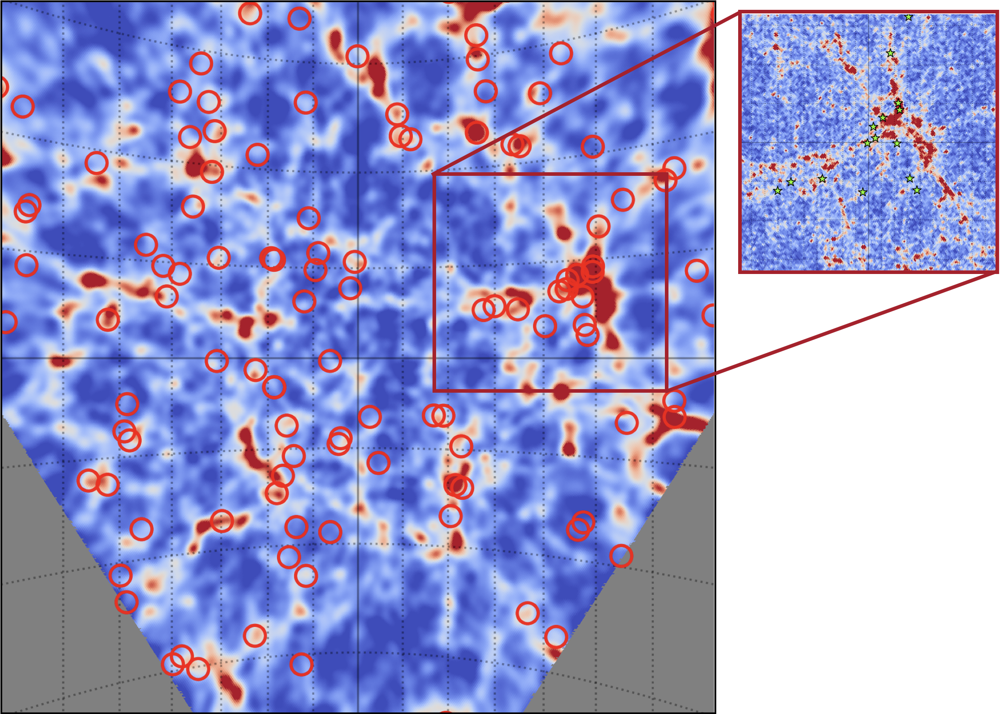

Large-scale structure · Surveys · Cosmology inference
Exploring the Universe through the cosmic web.
I am Joaquín Armijo, an observational cosmologist working on the structure, dynamics and observables of the Universe. Many of the methods I use for analysis are based in simulations, so I pioneer Simulation-Based Inference (SBI) in cosmology.

Large-scale structure simulation
Research focus
From simulated universes to the signals we observe.
My work brings together numerical simulations, galaxy clustering, weak gravitational lensing and modern statistical inference to test cosmology and gravity. Currently exploring new observables, like the GW signals provided by LVK interferometers, opening a new window for cosmology.
See research directions →Dark matter
simulations
Space reserved for simulation work and visual results.
02Galaxy
clustering
Space reserved for clustering analyses and statistics.
03Weak
lensing
Space reserved for lensing observables and survey science.
04Multi-messenger
cosmology
Connecting galaxy surveys and gravitational-wave sources.